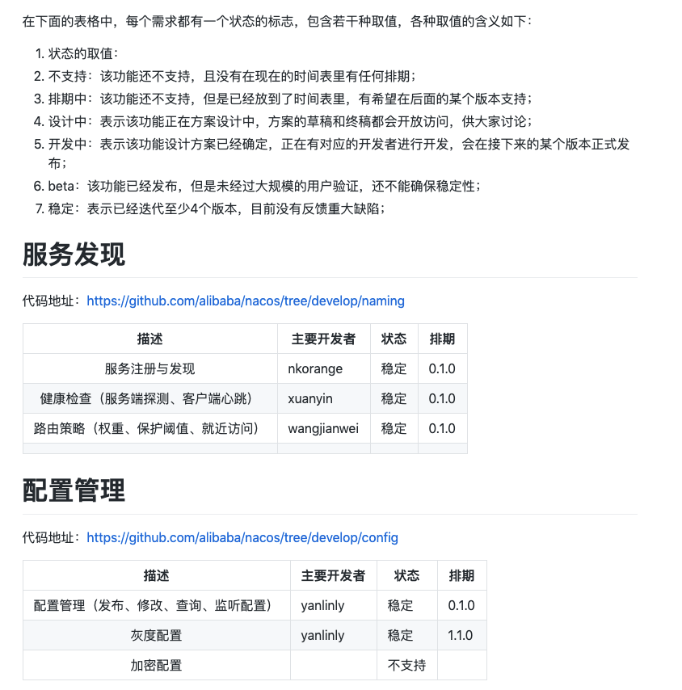

nacos的初步认识与使用
什么是nacos
来自官网的介绍：
Nacos 致力于帮助您发现、配置和管理微服务。Nacos 提供了一组简单易用的特性集，帮助您快速实现动态服务发现、服务配置、服务元数据及流量管理。
我们主要使用nacos的配置中心功能，关于配置中心的功能介绍如下：
动态配置服务可以让您以中心化、外部化和动态化的方式管理所有环境的应用配置和服务配置。
动态配置消除了配置变更时重新部署应用和服务的需要，让配置管理变得更加高效和敏捷。
配置中心化管理让实现无状态服务变得更简单，让服务按需弹性扩展变得更容易。
nacos作为配置中心已经经过了多个版本的迭代，目前处于稳定阶段。

图片源自nacos官方文档：https://nacos.io/zh-cn/docs/feature-list.html
安装部署
首先去 https://github.com/alibaba/nacos/releases 下载最新的 release 包，然后解压。
nacos的安装分两种安装方式：
standalone 模式
在linux下的启动方式：
sh bin/startup.sh -m standalone
在Windows下启动：
cmd bin/startup.cmd -m standalone
然后在 http://localhost:8848/nacos/index.html 进入控制台，nacos说明已经启动成功。
cluster 模式
集群模式需要依赖 MySQL，然后修改对用的配置文件。具体的安装方式不再赘述，官方文档有比较清晰的安装步骤。
在我们的单个项目，推荐使用standlone模式启动，不需要进行额外的数据库配置，nacos直接使用内置的数据库启动，部署起来非常方便。
nacos的配置存储位置
服务端
单体的nacos使用数据库Derby(Derby 是 Java 编写的数据库，属于 Apache 的一个开源项目)来进行数据的存储。存储路径在NACOS_PATH/data/derby-data
在实际使用的时候发现nacos直接复制程序文件夹到新的位置进行使用的时候，存储的数据也会直接复制过去，在启动之后可以直接使用保存好的数据。
客户端
nacos会将服务端的配置在本地缓存一份，默认位置在用户目录下的nacos文件夹：
缓存位置需要客户端在启动时使用-D参数进行指定
-DJM.SNAPSHOT.PATH=xxx
系统集成与使用
nacos相关配置概念
nacos为我们提供了以下几个功能：
-
配置管理
-
服务管理
-
命名空间
-
集群管理

其中服务管理按照设计是可以支持dubbo服务注册，替代zookeeper作为新的注册中心，但是我们目前使用dubbo版本的不支持使用nacos，因此我们主要使用nacos的配置管理功能。
nacos支持集群部署，在集群管理部署的情况下可以查看集群的节点。
主要介绍下命名空间和配置管理功能
命名空间

官方对命名空间的介绍：
在日常使用中常常需要不同的环境，比如日常，预发，线上环境，如果是逻辑隔离可以使用命名空间，Nacos支持命名空间来支持多环境隔离，可以在Nacos控制台创建多个命名空间。如果需要物理隔离，就要部署多套Nacos环境。
命名空间主要用来进行满足多环境的差异性配置。我们可以定义dev、test、release、prod等命名空间来进行使用。
当无妨访问全局配置中心的时候且需要进行开发时，依旧可以使用传统的配置方式，将配置文件放置在本地进行开发。
因此建议在本地开发的时候，application-dev.yml使用正常的本地配置，将其他环境的配置迁移到全局配置中心。
配置管理
在nacos配置中有几个核心的概念：
DataID：
Nacos 中的某个配置集的 ID。配置集 ID 是组织划分配置的维度之一。Data ID 通常用于组织划分系统的配置集。一个系统或者应用可以包含多个配置集，每个配置集都可以被一个有意义的名称标识。Data ID 通常采用类 Java 包（如 com.taobao.tc.refund.log.level）的命名规则保证全局唯一性。此命名规则非强制。
Group：
Nacos 中的一组配置集，是组织配置的维度之一。通过一个有意义的字符串（如 Buy 或 Trade ）对配置集进行分组，从而区分 Data ID 相同的配置集。配置分组的名称默认采用 DEFAULT_GROUP 。配置分组的常见场景：不同的应用或组件使用了相同的配置类型，如 database_url 配置和 MQ_topic 配置。
配置快照：
Nacos 的客户端 SDK 会在本地生成配置的快照。当客户端无法连接到 Nacos Server 时，可以使用配置快照显示系统的整体容灾能力。配置快照类似于 Git 中的本地 commit，也类似于缓存，会在适当的时机更新，但是并没有缓存过期（expiration）的概念。
nacos配置管理其他功能
配置版本历史管理
在配置文件修改完成点击发布的时候，nacos会对比本次更新与上次更新；
同时针对一份配置文件可以查询配置的历史，历史保留30天，可以选中某一个版本进行回滚

配置监听查询
nacos具有配置修改实时推送到客户端的功能，其背后的实现机制是一个HttpAgent来访问server暴露的http服务来获取配置文件的更新。在nacos的管理端，可以查询某个配置被那些客户端监听
配置文件迁移到nacos
基于nacos的设计，将本地的配置文件迁移到nacos有两种方式：
- 整体搬运配置文件到nacos，将原有的本地的配置文件赋予一个dataID和group然后整体复制到nacos
- 根据实际情况只将部分配置放在配置中心，使用类 Java 包（如 com.taobao.tc.refund.log.level）的命名规则保证全局唯一性
nacos的配置文件支持以下格式：
- TEXT
- JSON
- XML
- YAML
- HTML
- Properties
值得一提的是nacos的配置编辑器是vscode的在线版，对文件的高亮支持、文件的内容查找都有和本地编辑相同的体验，在修改配置文件时一定程度了减少了出错的概率。
集成到SpringBoot项目
在springboot中集成nacos作为配置中心非常简单，需要进行以下几个步骤的操作：
1、引入pom文件
<dependency>
<groupId>com.alibaba.boot</groupId>
<artifactId>nacos-config-spring-boot-starter</artifactId>
<version>0.1.4</version>
</dependency>
此处的版本0.1.4是针对springboot1.x的版本，对于springboot2.x，可以直接使用最新的版本，目前官方给出的最新版本是0.2.4
配置方式一：全局配置
在配置文件加入如下配置：
|
|
将其他配置转移到nacos配置中心。
此配置方式等效于在springboot的启动类上加上@NacosPropertySource注解
|
|
在配置中心加入下面的配置
|
|
在需要使用nacos的数据时，可以借助@NacosValue注解
|
|
配置方式二：灵活的局部配置
在整体配置的基础上，可以对实体代码进行配置，如下所示
|
|
在nacos配置中心加上如下的配置：
DataId：apple
Group：DEFAULT_GROUP
配置内容：
|
|
获取配置
|
|
在代码中更新配置
nacos提供了发布配置到配置中心的接口，可以在特定的场景进行配置发布操作
发布主要借助configService这个核心类
|
|
@NacosInjected 是一个核心注解，用于在Spring Beans 中注入 ConfigService，ConfigService支持的功能如下：

多环境配置
针对多环境的配置，nacos提供了命名空间来应对这个场景。
在配置文件加入如下配置：
|
|
需要注意的是这里的namespace需要使用guid而不是名称。